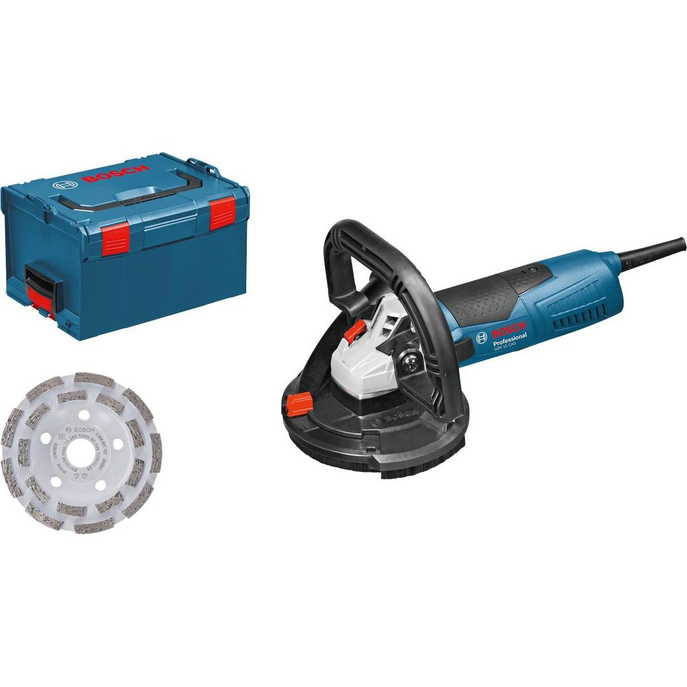
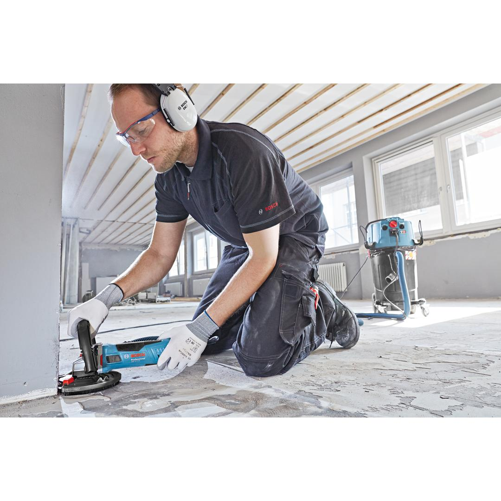
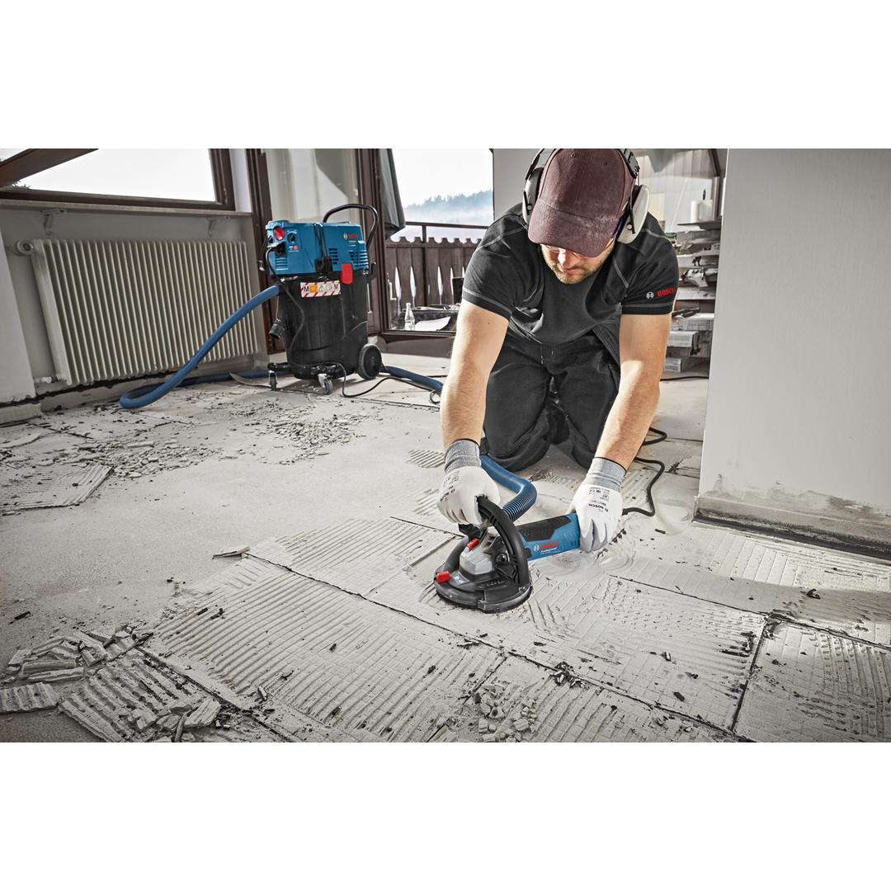

0601776001





| Rated input power |
1,500 W |
| No-load speed |
9,300 rpm |
| Grinding spindle thread |
M14 |
| Main handle |
Bow (rotating) |
| Disc diameter |
125 mm |
| Grinding head, diameter |
125 mm |
| Weight |
2.600 kg |
| Tool dimensions (width) |
256 mm |
| Tool dimensions (length) |
370 mm |
| Tool dimensions (height) |
200 mm |
Powerful concrete grinder with flush-grinding capabilities
The GBR 15 CAG Professional is a corded, powerful concrete grinder with flush-grinding capabilities. Its high-powered 1,500 W motor enables a fast work progress even under load. Both its ergonomically shaped grip and a low tool weight ensure comfortable handling. This concrete grinder also includes a movable protective guard section for dust protection while grinding close to edges.
This tool is intended for grinding in concrete. It is compatible with the Bosch Click & Clean dust extraction system.
The GBR 15 CAG Professional operates at 9,000 rpm and includes features such as constant speed, restart protection, and soft start.